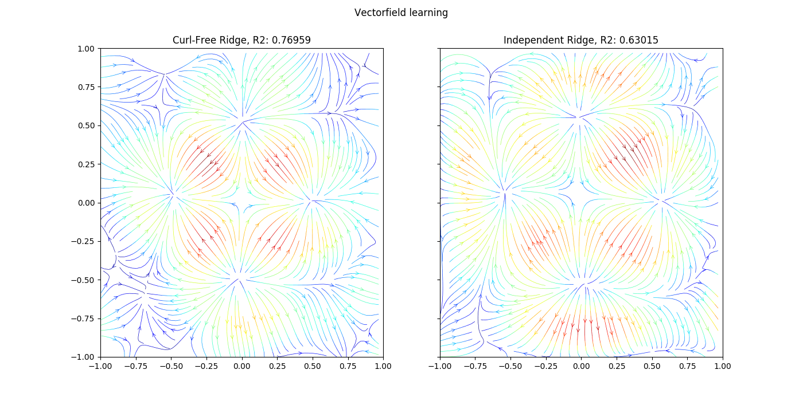

Vector-field Learning with structured output kernel¶
An example to illustrate structured learning with operator-valued kernels.
We compare Operator-valued kernel (OVK) with scikit-learn multi-output ridge regression.
Out:
('R2 curl-free ridge: ', 0.76958525956242696)
('R2 independant ridge: ', 0.63015333401036688)
# Author: Romain Brault <ro.brault@gmail.com>
# License: MIT
# -*- coding: utf-8 -*-
import operalib as ovk
import matplotlib.pyplot as plt
import numpy as np
from numpy.random import RandomState
from sklearn.model_selection import train_test_split
from sklearn.kernel_ridge import KernelRidge
def main():
"""Example of vector-field learning."""
# Fix a seed
random_state = RandomState(0)
# Generate data
inputs, targets = ovk.toy_data_curl_free_field(n_samples=2000)
inputs_mesh = ovk.array2mesh(inputs)
(inputs_train, inputs_test,
targets_train, targets_test) = train_test_split(inputs, targets,
train_size=(inputs
.shape[0] -
40 ** 2),
random_state=random_state)
# Add some noise
targets_train = (targets_train +
.175 * random_state.randn(targets_train.shape[0],
targets_train.shape[1]))
regressor = {'CF':
ovk.OVKRidge(ovkernel=ovk.RBFCurlFreeKernel(gamma=2.),
lbda=1e-4),
'Indep':
KernelRidge(kernel='rbf', gamma=.5, alpha=1e-4)}
# Learning with curl-free
regressor['CF'].fit(inputs_train, targets_train)
score_cf = regressor['CF'].score(inputs_test, targets_test)
print('R2 curl-free ridge: ', score_cf)
targets_mesh_cf = ovk.array2mesh(regressor['CF'].predict(inputs))
# Learning with sklearn ridge
regressor['Indep'].fit(inputs_train, targets_train)
scode_id = regressor['Indep'].score(inputs_test, targets_test)
print('R2 independant ridge: ', scode_id)
targets_mesh_id = ovk.array2mesh(regressor['Indep'].predict(inputs))
# Plotting
# pylint: disable=E1101
fig, axarr = plt.subplots(1, 2, sharex=True, sharey=True, figsize=(14, 7))
axarr[0].streamplot(inputs_mesh[0], inputs_mesh[1],
targets_mesh_cf[0], targets_mesh_cf[1],
color=np.sqrt(targets_mesh_cf[0]**2 +
targets_mesh_cf[1]**2),
linewidth=.5, cmap=plt.cm.jet, density=2,
arrowstyle=u'->')
axarr[1].streamplot(inputs_mesh[0], inputs_mesh[1],
targets_mesh_id[0], targets_mesh_id[1],
color=np.sqrt(targets_mesh_id[0]**2 +
targets_mesh_id[1]**2),
linewidth=.5, cmap=plt.cm.jet, density=2,
arrowstyle=u'->')
axarr[0].set_ylim([-1, 1])
axarr[0].set_xlim([-1, 1])
axarr[0].set_title('Curl-Free Ridge, R2: ' + str(score_cf))
axarr[1].set_ylim([-1, 1])
axarr[1].set_xlim([-1, 1])
axarr[1].set_title('Independant Ridge, R2: ' + str(scode_id))
fig.suptitle('Vectorfield learning')
plt.show()
if __name__ == '__main__':
main()
Total running time of the script: ( 0 minutes 20.109 seconds)